固定完整样本 24900
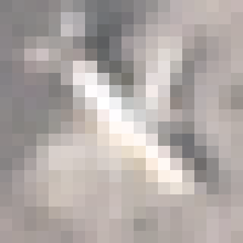
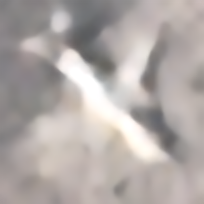
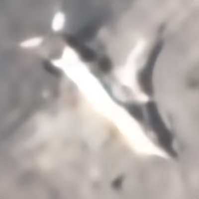
三种方法均保留斜向机身及右侧明暗边界；纯重建没有原感知路线的细斜纹。相对B20未见稳定的细节优势，机身内部仍平滑。
下载原生20×20输入下载classical原尺寸80×80下载real-PSNR原尺寸80×80


滑块保留完整且相同的视野。候选的400×400图仅为80×80输出的双三次展示插值。
原生20×20 → 学习输出80×80 → 展示400×400
让有效分辨率、配对真值与飞机在画面中的大小对齐，再检验领域适配是否有帮助。
两个候选各完成全部8,000张原生飞机推理，并分别通过16,000个PNG逐文件审计：80像素学习输出与400像素展示图各8,000张。覆盖完整不等于效果提升。
78组留出实拍参考、clean与sensor两种冻结退化，共156次测试；按4个独立地点等权平均。全部方法使用同一20×20输入，对照同一80×80参考，边缘裁去4像素。旧C20和B模型先产生原有20倍输出，再按相同规则缩至80×80；此表不与上一轮400像素画布分数直接比较。
| 方法 | 本轮更新数 | 所用权重 | 全图PSNR ↑ | 区域PSNR ↑ | 区域SSIM ↑ | 区域LPIPS ↓ | 边缘误差 ↓ | 同算子低清误差 ↓ |
|---|---|---|---|---|---|---|---|---|
| 双三次插值 | 0 | 无学习参数 | 21.855 | 18.942 | 0.7145 | 0.4444 | 0.06844 | 0.01677 |
| 原有 C20 模型 | 0 | 历史固定权重 | 23.523 | 20.590 | 0.8210 | 0.3854 | 0.06242 | 0.00967 |
| B_real · 20,000步 | 0 | 历史第 20,000 步 | 23.940 | 21.030 | 0.8499 | 0.3526 | 0.05995 | 0.00980 |
| B_real · 30,000步 | 0 | 历史第 30,000 步 | 23.736 | 20.832 | 0.8437 | 0.3386 | 0.06133 | 0.01023 |
| SwinIR classical x4 · 官方初始 | 0 | 官方初始 | 24.502 | 21.661 | 0.8404 | 0.3536 | 0.05745 | 0.00739 |
| SwinIR real-PSNR x4 · 官方初始 | 0 | 官方初始 | 23.114 | 20.183 | 0.8300 | 0.4012 | 0.06158 | 0.01693 |
| SwinIR classical x4 · 实拍适配 | 6,000 | 本轮第 5,500 步 | 25.614 | 22.805 | 0.8811 | 0.3145 | 0.05186 | 0.00525 |
| SwinIR real-PSNR x4 · 实拍适配 | 6,000 | 本轮第 6,000 步 | 24.736 | 21.867 | 0.8616 | 0.3402 | 0.05579 | 0.00714 |
这些分数来自有高清参考的计算降采样测试。原生PlanesNet输入没有同场景高清真值，不能据此给其“真实恢复精度”评分。表格按预先固定的方法顺序排列，测试结果不用于重选权重。
区域掩膜采用官方飞机菱形标注，包含部分背景，并非精确机翼轮廓；LPIPS与边缘分数需结合完整飞机目视判断。
先在29张固定原生与8张验证全图复核两候选，再对最终GPU输出的固定五张与测试前选定的4地点×2退化完整图实际查看。配对测试的总体指标有提升，固定原生五张主要是轮廓、平滑度和伪纹理变化，相对B20并非每张肉眼明显更好。无原生高清真值，不认定新增细节真实。
纯重建5500：29原生+8验证未见新增明显周期网格或整体塌陷；固定五张的主要轮廓较初始化清楚，内部仍平坦，部分结果比B20更软。验证地点8细机身仍断连，测试细小部件仍可能合并。
real-PSNR6000：通过同样的狭义目视门槛，轮廓较初始化清楚，但原生内部仍平滑，低对比28080/29529难辨；固定五张存在尾端变软与亮区膨胀，未认定优于纯重建。
以下五张沿用历史固定编号，标签可见，保留完整视野；不把这五张当作全部8,000张的平均观感。



三种方法均保留斜向机身及右侧明暗边界；纯重建没有原感知路线的细斜纹。相对B20未见稳定的细节优势，机身内部仍平滑。
下载原生20×20输入下载classical原尺寸80×80下载real-PSNR原尺寸80×80
滑块保留完整且相同的视野。候选的400×400图仅为80×80输出的双三次展示插值。
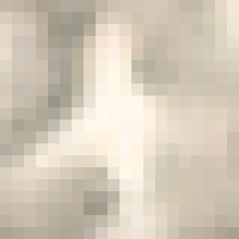
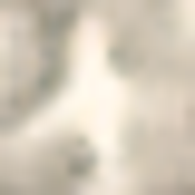
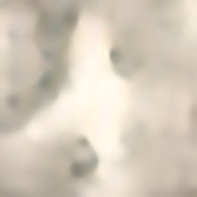
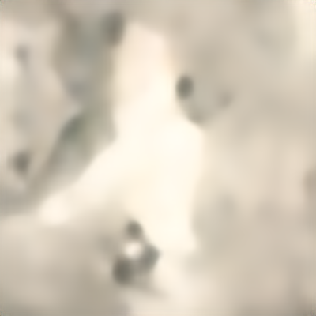
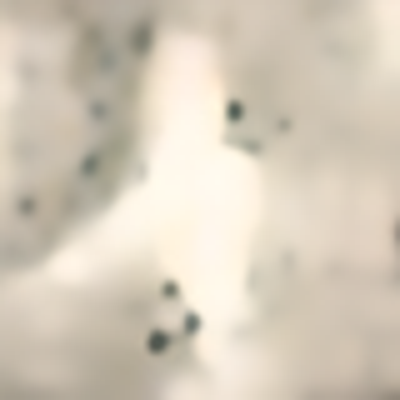
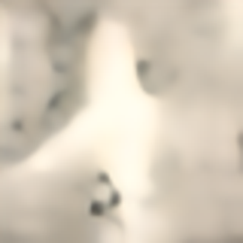
完整翼身轮廓保留。纯重建右下暗点更强，real-PSNR尾端更柔和；这些变化没有高清真值可认证，不能把暗点解释成真实部件。
下载原生20×20输入下载classical原尺寸80×80下载real-PSNR原尺寸80×80
滑块保留完整且相同的视野。候选的400×400图仅为80×80输出的双三次展示插值。
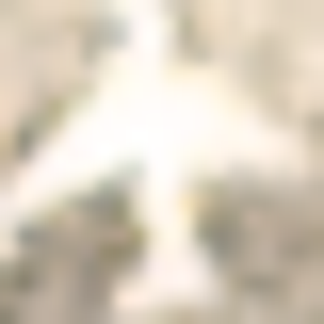
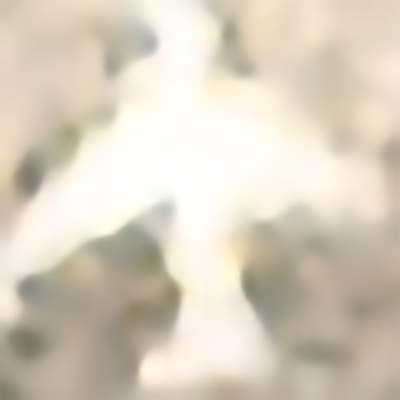
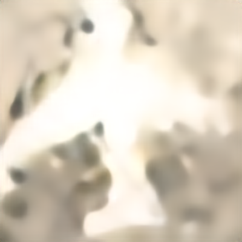
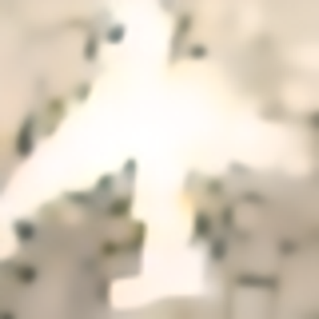
纯重建翼缘和尾翼较整齐，real-PSNR尾端略软；与B20相比锐度提升不一致。白色机身内部仍接近均匀色块。
下载原生20×20输入下载classical原尺寸80×80下载real-PSNR原尺寸80×80
滑块保留完整且相同的视野。候选的400×400图仅为80×80输出的双三次展示插值。
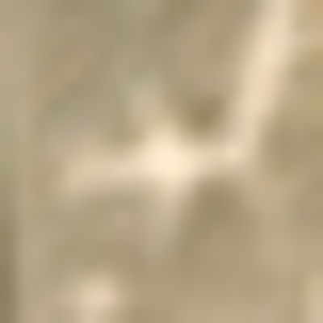
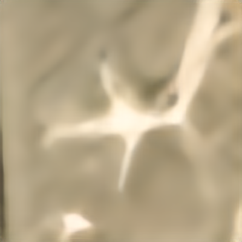
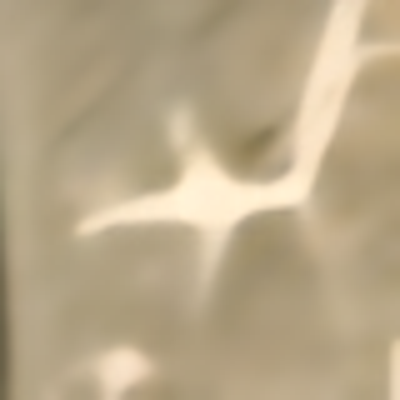
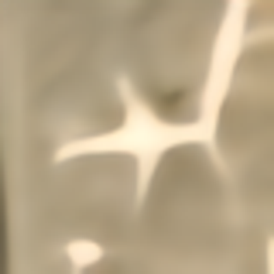
长机身与横向翼面连续，纯重建较原初始化清楚；B20也保留了主要轮廓。real-PSNR下方亮区略膨胀，不认定新纹理为真。
下载原生20×20输入下载classical原尺寸80×80下载real-PSNR原尺寸80×80
滑块保留完整且相同的视野。候选的400×400图仅为80×80输出的双三次展示插值。
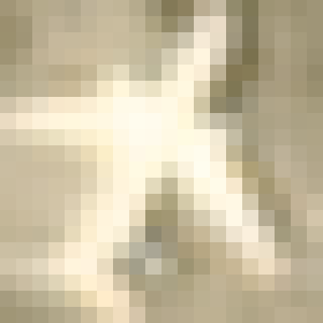
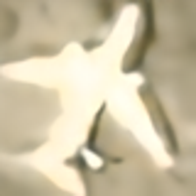
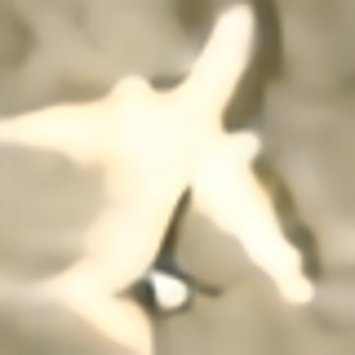
主机体、机翼和右下邻机均保持在完整视野；三者主要区别在轮廓、阴影和平滑程度。没有证据证明恢复了舱窗、发动机等真实细节。
下载原生20×20输入下载classical原尺寸80×80下载real-PSNR原尺寸80×80
滑块保留完整且相同的视野。候选的400×400图仅为80×80输出的双三次展示插值。
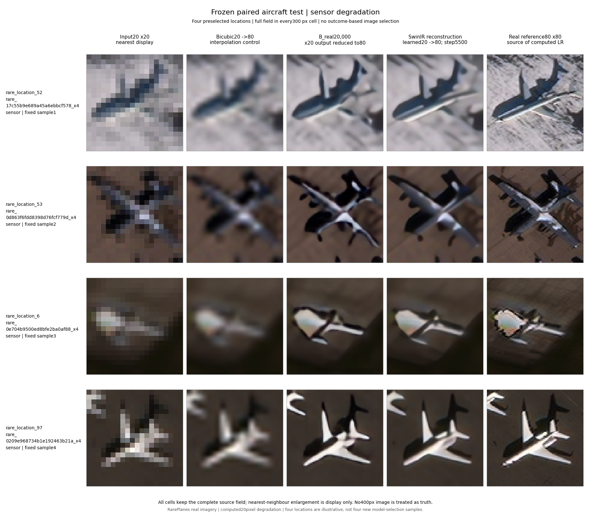
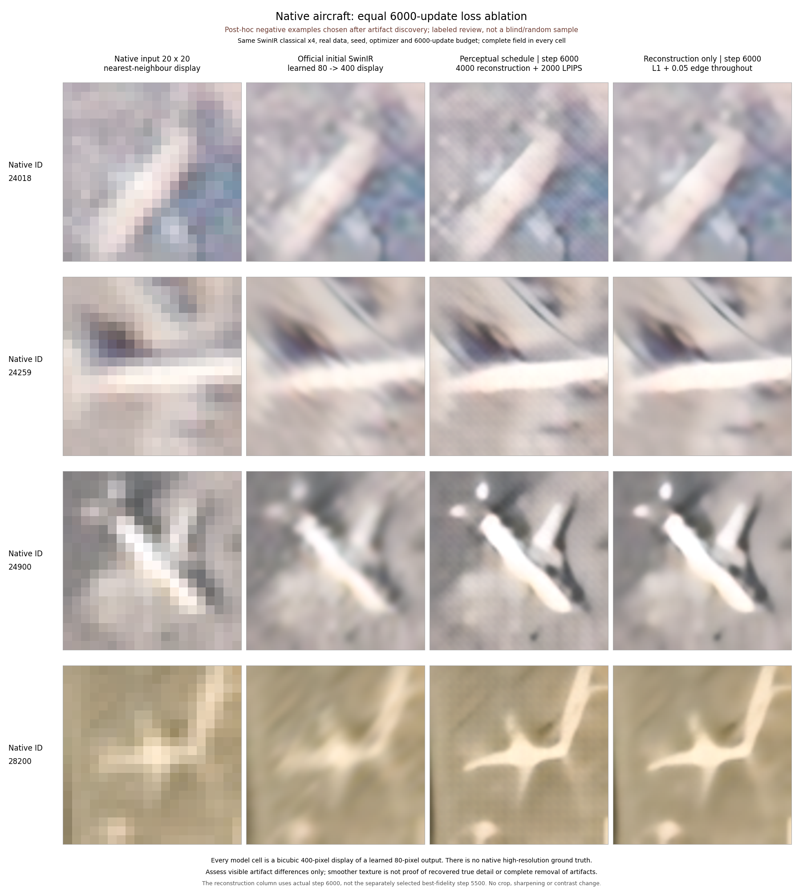
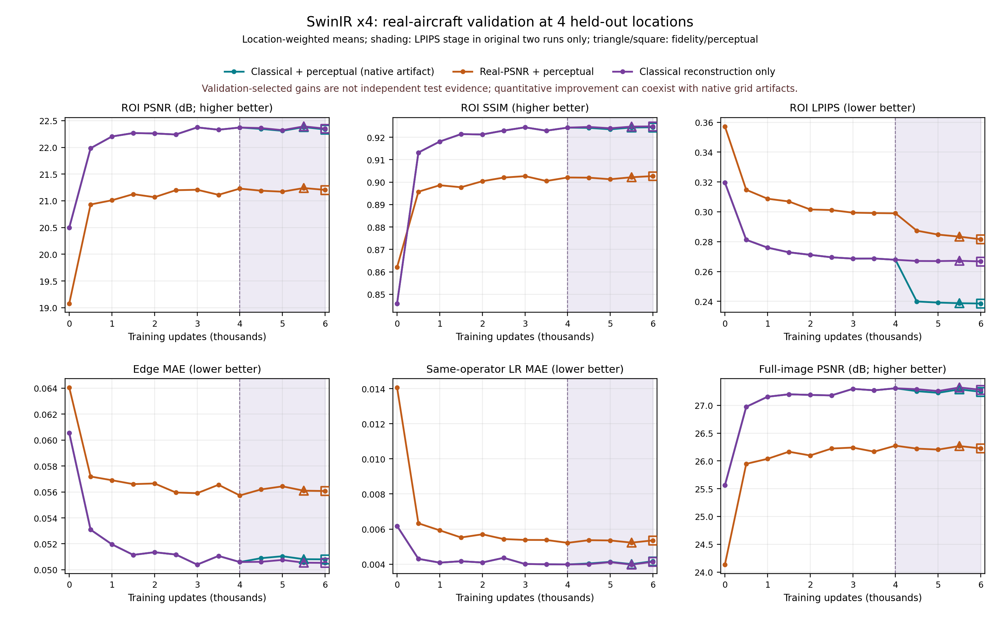
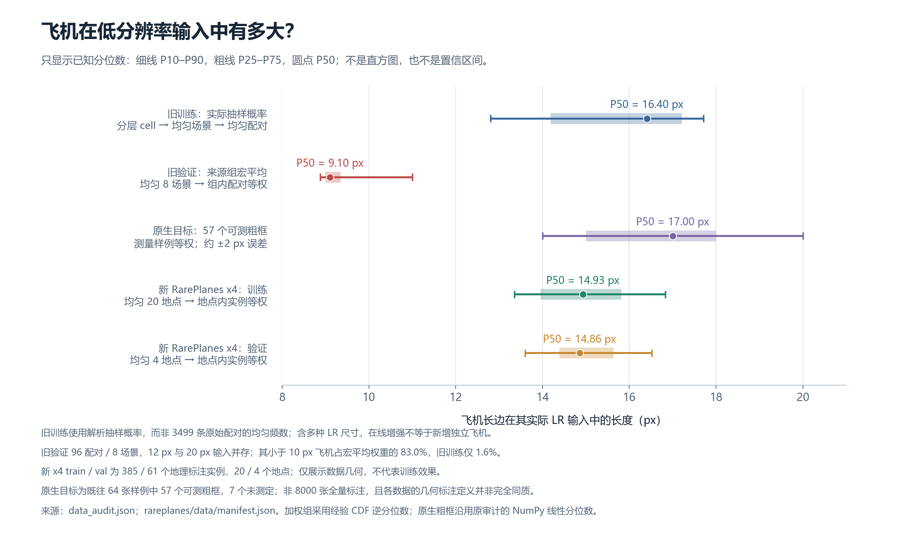
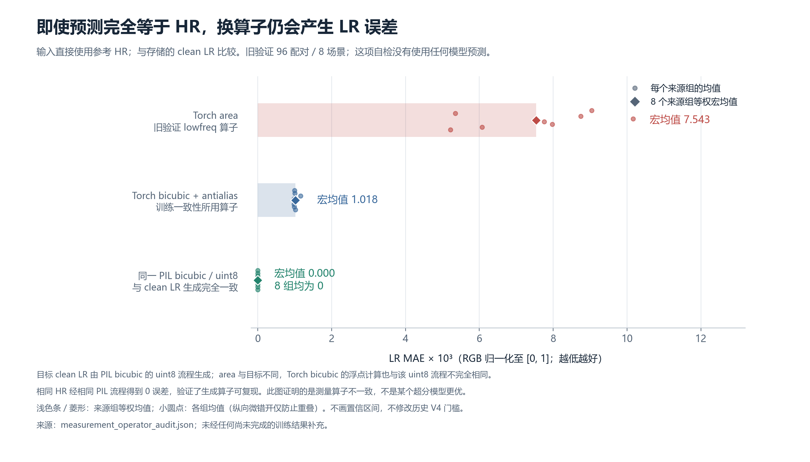
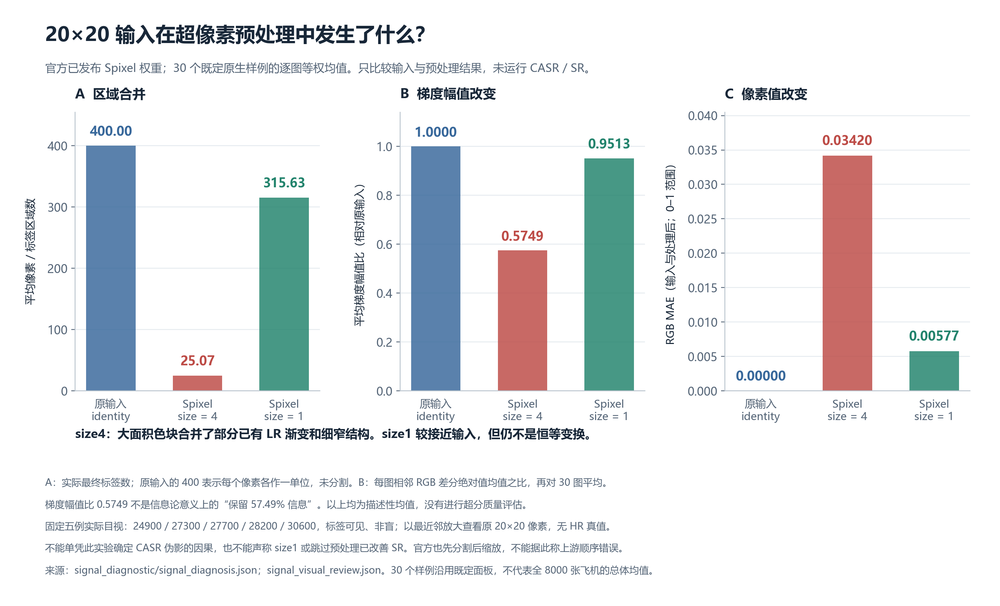
使用 RarePlanes 实拍影像，按场景及全球坐标去重后得到524个标注对象，剔除69个重叠切片重复记录。4倍任务划分为385训练、61验证、78测试对象，分别来自20、4、4个不重叠地点。
高清参考为原生影像裁切或缩小形成的80×80图像，再计算生成20×20低清输入；飞机长边约占13–18个输入像素。本轮不使用AI生成图。按地点均衡采样，再按对象均衡采样；在线旋转、翻转及曝光变化不算新增独立样本。
本轮排除了旧RarePlanes九个地点及官方测试地点，但未完全排除与旧DOTA/PlanesNet的地理交叉，也不能保证跨日期标注来自不同实体飞机。官方菱形标注包含背景，且边缘可能留有少量邻机片段。
比较官方 SwinIR classical x4 与 real-PSNR x4 初始化，固定 FP32、有效批量8、随机种子1005、Adam起始学习率3e-5及余弦衰减，每500步验证。每个运行完成6000次优化更新；这是受控领域适配试验，不声称已充分收敛。
最初两组采用4000步重建与2000步感知适配；经典模型的验证LPIPS改善，但29张原生固定样本复核发现新增细密斜纹，因此该候选被否决并保留全部记录。随后另行冻结6000步纯重建对照，保持数据、初始化、采样、增强和学习率不变，只移除后2000步训练中的感知项。
所有低清输入由真实高清参考计算得到。训练目标为有效区域与飞机ROI加权L1及0.05倍边缘损失；原感知阶段附加0.03倍VGG-LPIPS。新纯重建候选按验证ROI-PSNR选择，real-PSNR候选按结构门槛内的验证LPIPS选择，均需实际目视门槛后再冻结。测试不用于重选或改权重。
学习输出为80×80。网站400×400图仅将80×80结果双三次插值用于展示，不能称为恢复了20倍真实细节。旧C20和B模型先按原流程生成，再统一缩至80×80进行同网格比较。
独立测试结果按地点等权，四个地点的主比较ROI与LPIPS方向均改善。相对B20：clean区域PSNR +2.073 dB、LPIPS下降13.55%；sensor +1.478 dB、LPIPS下降8.17%。合并ROI差的地点bootstrap 95%区间约[1.279,2.074] dB；只有4地点，该区间仅作描述性估计。
相对同架构官方初始化，测试区域PSNR提高1.144 dB、LPIPS下降11.04%；但clean同算子低清误差增加0.000885，故不声称所有指标都变好。
旧测量审计显示：生成低清采用PIL bicubic，而部分旧一致性检查采用area，完美高清参考也产生非零误差。新评估统一算子；历史数据完整保留，不改写原实验结论。
6000步同预算损失对照的前4000步逐例指标和训练日志完全一致；去掉最后2000步感知项后，已发现的四个条纹负例明显减轻，验证LPIPS反而变差约0.02821。该结果支持结构保真与感知分数分开判断，不证明所有伪影均来自某一种算子。
官方classical x4采用pixelshuffle上采样，官方real-PSNR x4采用nearest+conv上采样；两者结构与预训练退化都不同，差异不能仅归因于退化先验。
独立模型测试仅覆盖4个留出地点、78个实拍参考对象。clean与sensor两种退化相关，156次结果不能视为156个独立样本。地点bootstrap仅作描述性不确定性估计。
计算退化的sensor模型未经过PlanetScope真实光学PSF标定。有真实高清参考的计算降采样结果，不能直接等价为原生PlanesNet影像的真实超分精度。
原生20×20飞机没有对应高清真值。完整8000张推理和逐文件审计证明交付覆盖与文件完整性，不能证明8000张都改善；固定29张的目视复核有标签可见，属于模型辅助评审而非盲测或人工专家结论。
两个官方SwinIR预训练模型的上采样结构也不同，因此它们的差异不能仅归因于退化先验。纯重建对照与同初始化的原感知组才用于检验训练损失变化。
旧实验协议、训练预算与结果完整保留。未把旧验证或测试样本加入训练，未将在线增强或重复切片视作新增独立飞机。
单随机种子试验，尚未在新环境重新完整复现；代码与数据清单归档不等于跨环境重复实验证明。
网站遵守已有浏览器安全阻断，采用静态内容、图片、链接与线上字节核验；不声称完成浏览器交互渲染测试。
400像素展示不会增加输入中不存在的观测信息。模型补出的纹理与细节仍可能来自训练先验；没有独立依据时，不把它们解释为已证实的机型、舷号或真实结构。
下载本页结果摘要；所有测试数字由真实报告读取，构建器不生成占位分数。